CentOS에서 NginX 설치, 설정하는 방법
네이버 클라우드 CentOS에서 NginX 설치, 설정하는 방법입니다
써드아이시스템이 네이버 클라우드 프리미엄 파트너사로 활동하면서 보유하게 된 네이버 클라우드와 관련된 여러 기술 노하우들을 많은 분들께 공유하려고 합니다.
Python 다운로드
Python 설치
2-1. Add Python 3.9 to PATH 옵션 선택
2-2. Disable path length limit 선택
mkdocs 설치
3-1. pip install mkdocs-material
3-2. python.exe -m pip install –upgrade pip
3-3. pip install mkdocs-awesome-pages-plugin
3-4. mkdocs new {폴더명}
3-5. cd blog-mkdocs 이동 후 mkdocs serve
mkdocs를 사용하려면 먼저 Python을 설치해야 합니다.
https://www.python.org/downloads/
2020-11-27일 현재 최신버전은 3.9.0입니다.
Python 설치 시작화면에 PATH에 python을 추가하는 옵션이 있습니다.
“Add Python 3.9 to PATH” 옵션을 선택하고 설치를 시작하면 됩니다.
윈도에는 기본설정에 파일경로가 최대 260자로 제한되어 있는데, 이 제한을 풀것인지 확인하는 과정입니다.
“Disable path length limit” 옵션이 나오는데, 특별한 문제가 없다면 해제하고 가면 됩니다.
mkdocs 설치하는 방법이 여러가지 있지만 가장 많이 사용되는 테마인 material 테마를 적용한 상태로 설치합니다.
pip install mkdocs-material
mkdocs를 설치하고 나면 pip 업그레이드에 대한 안내가 나옵니다.
WARNING: You are using pip version 20.2.3; however, version 20.2.4 is available.
You should consider upgrading via the 'c:\users\{***}\appdata\local\programs\python\python39\python.exe -m pip install --upgrade pip' command.
안내에 나온대로 pip를 업그레이드 해줍니다.
python.exe -m pip install --upgrade pip
문서 구조나 네비게이션을 좀 더 쉽게 표현하고 구성하게 해주는 플러그인입니다. 기본적으로 설치해두는 것이 여러모로 편리합니다.
pip install mkdocs-awesome-pages-plugin
이제 기본으로 필요한 것들은 다 설치했으니 블로그를 만들어봅시다. mkdocs new {폴더명}
mkdocs new blog-mkdocs
이제 웹브라우져에서 블로그를 확인해봅시다. 위에서 만들어진 폴더로 이동합니다.
cd blog-mkdocs
mkdocs serve
그러면 http://127.0.0.1:8000 주소로 접속하면 기본 블로그를 확인해볼 수 있고 mkdocs serve 명령으로 문서 변경을 실시간으로 감지해서 문서를 수정하면 브라우져에 바로바로 반영됩니다.
이제 만들어진 블로그 문서를 github 등이나 기타 서버로 배포하려면 다음과 같은 명령어를 입력하면 됩니다.
mkdocs build
그러면 아까 만들어진 blog-mkdocs 폴더 밑에 site 라는 폴더가 생성되고 그곳에 필요한 html 문서들이 만들어집니다.
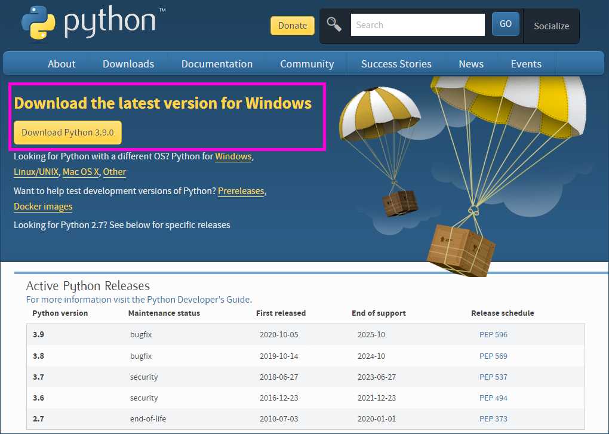
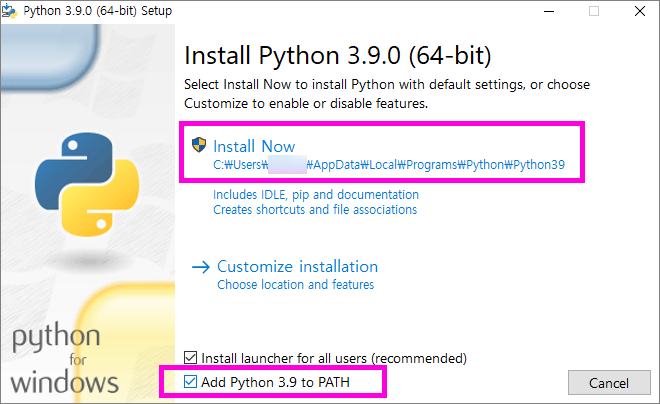
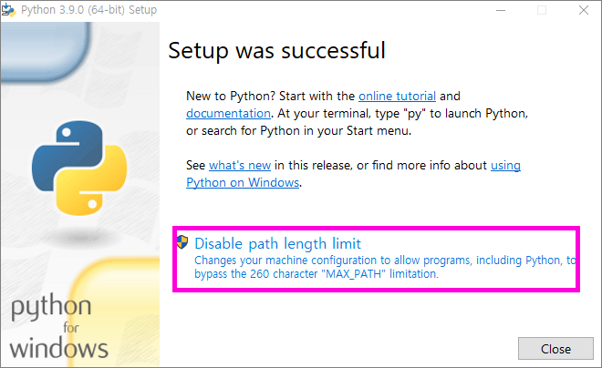


 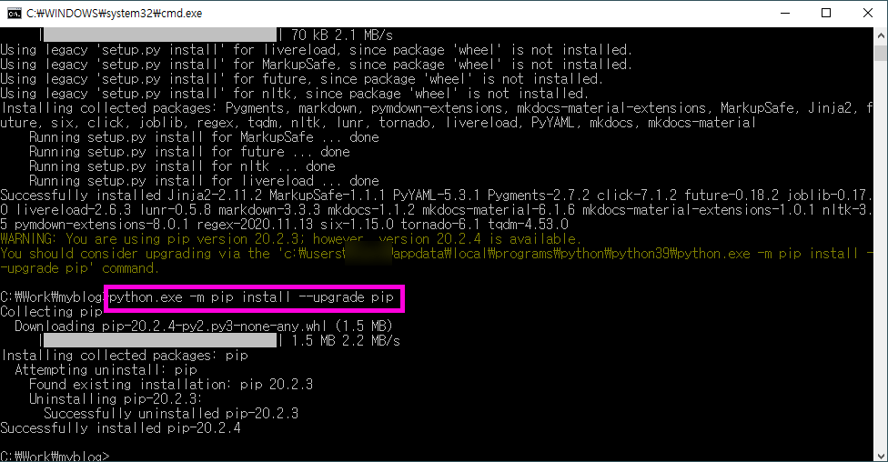
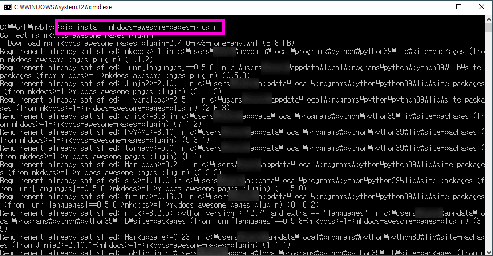
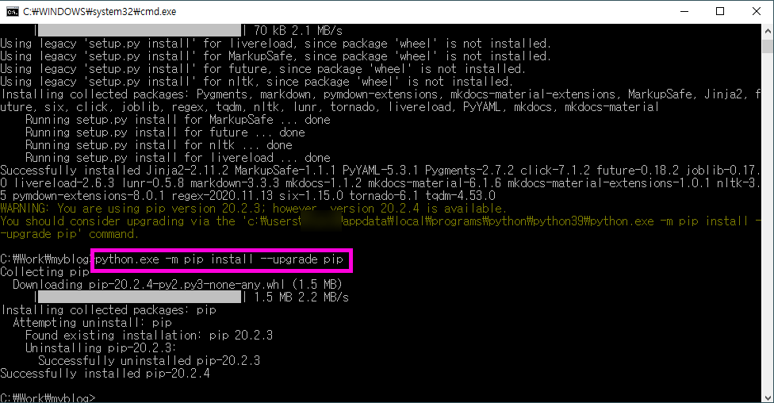
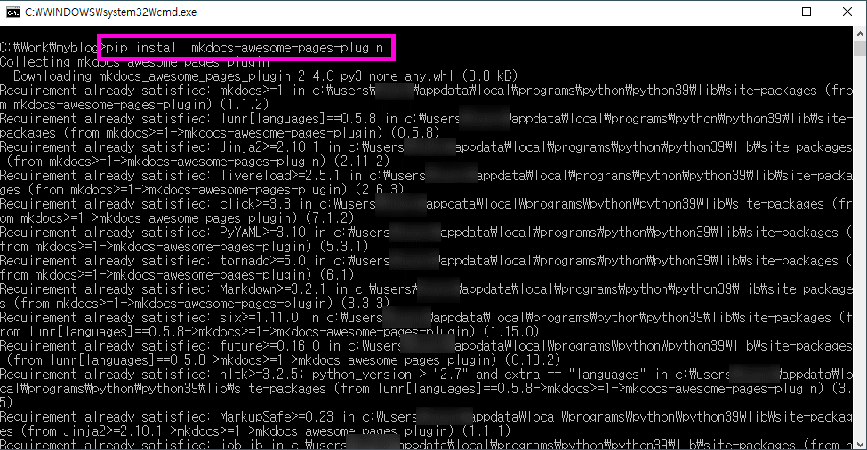


 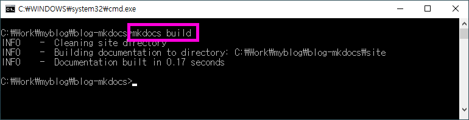
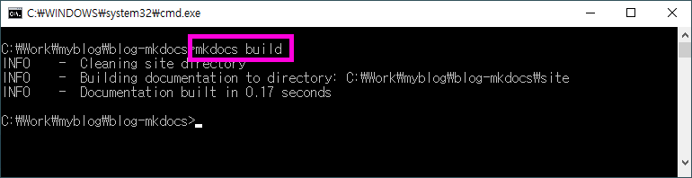
 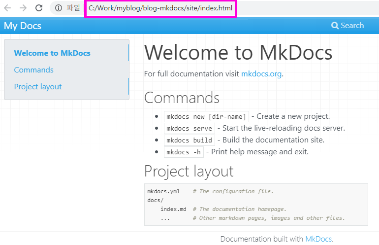
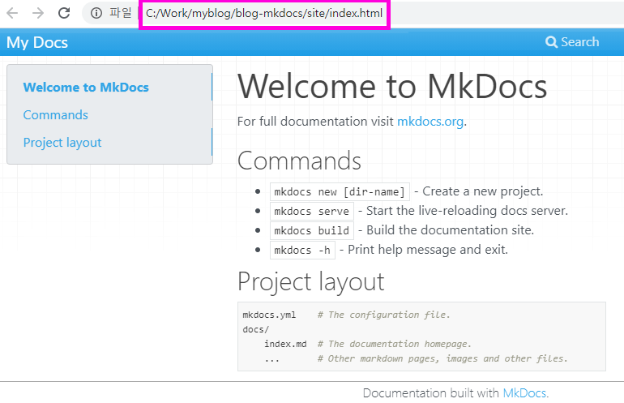
문서 최종 수정일 : 2020-11-30